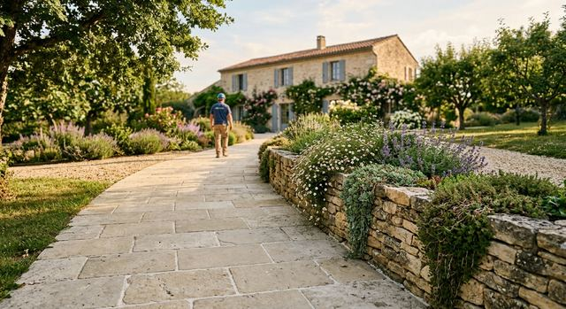
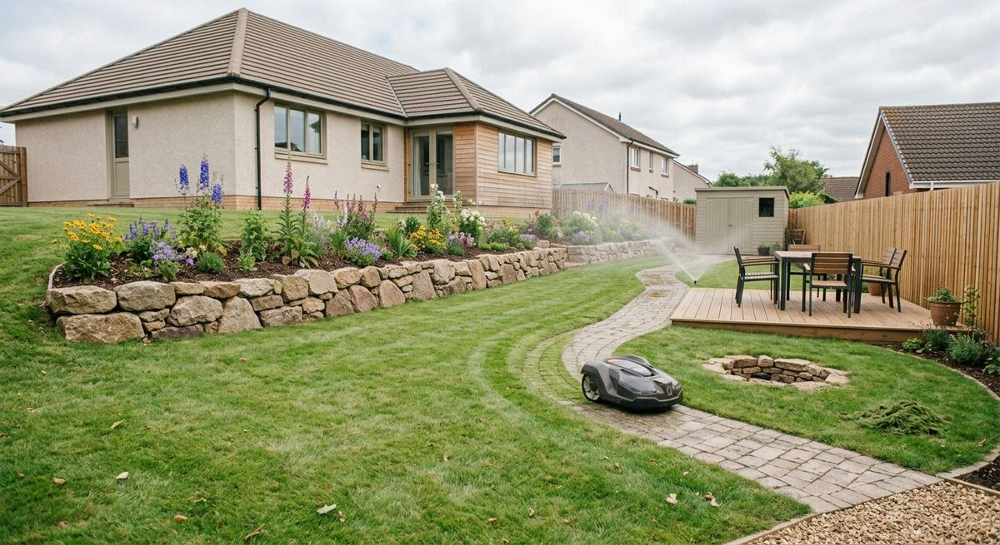
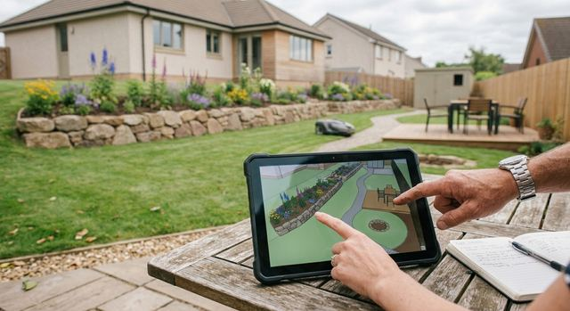
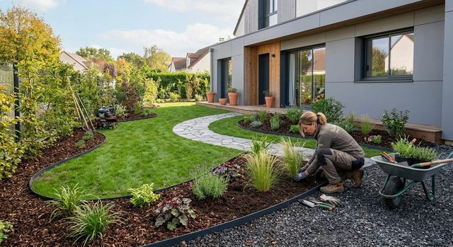
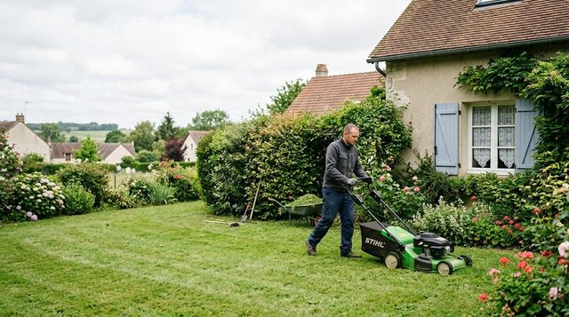
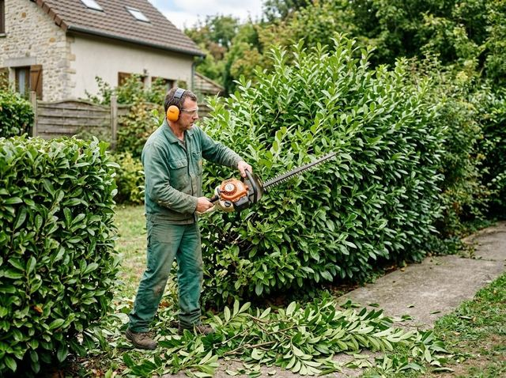
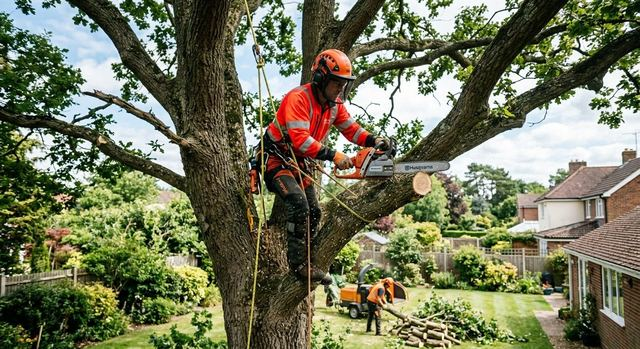
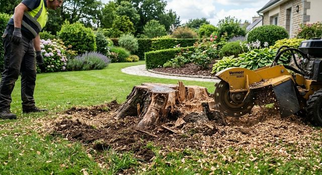

Réalisations
Terrasses, allées, murets et jardins entretenus
Un aperçu des ouvrages et des travaux d'entretien qui relèvent de l'aménagement paysager.





Photos d'illustration.
Aménagements
Ce que l'on construit
Création de jardin, préparation de terrain, plantations et ouvrages en pierre ou en bois.

Massif et pelouse devant une maison contemporaine 
Pose d'une allée en dalles 
Terrassement avant aménagement 
Jardin de campagne, massifs et allée de gravier 
Nivellement du terrain au râteau 
Plantation d'un arbuste en massif
Entretien
Ce que l'on entretient
Pelouse, haies, arbres et massifs : les gestes qui gardent un jardin net et en bonne santé.

Tonte de pelouse 
Taille de haie 
Élagage d'un chêne 
Dessouchage
Un projet du même genre ?
Écrivez-nous quelques lignes, avec des photos de votre terrain si vous en avez : c'est un bon point de départ.